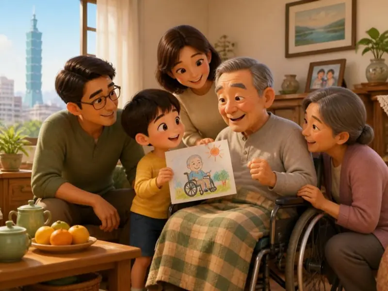
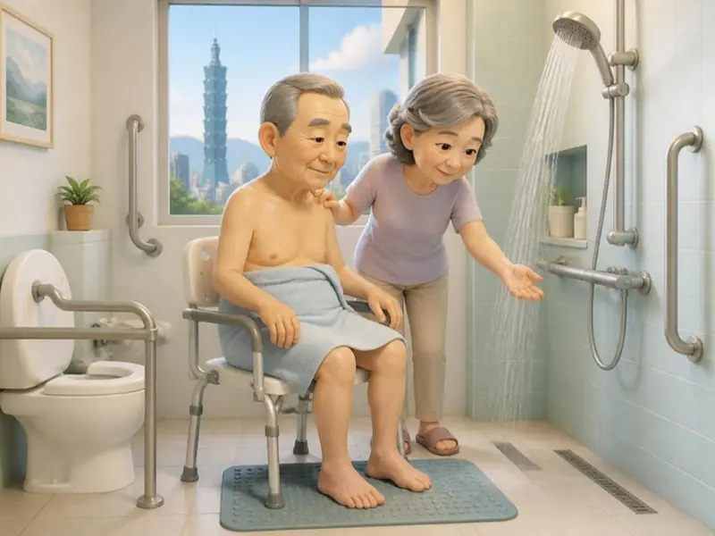
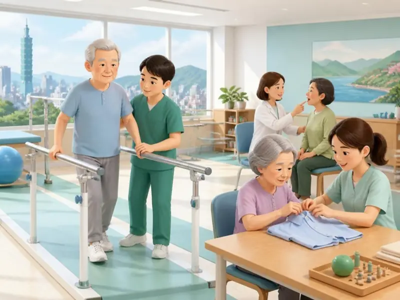

<!doctype html>
<html lang="zh-Hant-TW">
<head>
<meta charset="utf-8">
<meta name="viewport" content="width=device-width,initial-scale=1,viewport-fit=cover">
<title>回家第一週</title>
<meta name="description" content="腦中風急性後期（PAC）照顧者闖關遊戲：出院回家第一週">
<meta name="theme-color" content="#2E7FE0">
<style>
@font-face{font-family:"GameHuninn";src:url(fonts/game-sub.woff2) format("woff2");font-display:swap}
@font-face{font-family:"Nunito";src:url(fonts/nunito-latin-800.woff2) format("woff2");font-weight:600 900;font-display:swap;unicode-range:U+0000-00FF}
:root{--bg:#FFF7EA;--surface:#FFFFFF;--surface-2:#FFF1DA;--ink:#123A73;--text:#2B2F3A;--muted:#5D6472;--line:#F0DEC2;--primary:#1F6FD1;--ok:#14866D;--ok-soft:#DDF5EC;--alert:#D6334B;--alert-soft:#FFE8EB;--warn:#B86E00;--warn-soft:#FFF0D2;--weak:#E8590C;--sky1:#5DB7FF;--sky2:#2E7FE0;--h:#E8495F;--e:#F08C00;--s:#14866D;--shadow:0 2px 0 rgba(18,58,115,.06),0 10px 24px -8px rgba(18,58,115,.22);--r:22px;
 --font:"Nunito","GameHuninn","PingFang TC","Microsoft JhengHei","Noto Sans TC",system-ui,sans-serif}
@media (prefers-color-scheme:dark){:root{--bg:#160F09;--surface:#241910;--surface-2:#2E2015;--ink:#FFD9A6;--text:#F5E3CC;--muted:#CDB08E;--line:#4A3420;--primary:#FFB45C;--ok:#7BD9B8;--ok-soft:#173A2E;--alert:#FF8A9A;--alert-soft:#3D1A20;--warn:#FFC266;--warn-soft:#3A2A10}}
*{box-sizing:border-box}html,body{margin:0}
body{background:var(--bg);color:var(--text);font-family:var(--font);font-size:20px;line-height:1.6;overflow-x:hidden}
button{font:inherit;color:inherit}
.hud{position:sticky;top:0;z-index:5;background:linear-gradient(180deg,var(--sky1),var(--sky2));color:#fff;padding:calc(env(safe-area-inset-top) + 8px) 14px 10px;box-shadow:var(--shadow)}
.hrow{display:flex;align-items:center;gap:8px;max-width:720px;margin:0 auto}
.daypill{background:#fff;color:#1F6FD1;font-weight:800;border-radius:999px;padding:3px 12px;font-size:17px;white-space:nowrap}
.daypill.boss{background:#FFE6A8;color:#7A4A00}
.when{font-weight:700;font-size:17px;flex:1;white-space:nowrap;overflow:hidden;text-overflow:ellipsis}
.snd{background:rgba(255,255,255,.22);border:1.5px solid rgba(255,255,255,.6);color:#fff;border-radius:12px;padding:2px 10px;font-size:16px;cursor:pointer}
.bars{display:grid;grid-template-columns:repeat(3,1fr);gap:8px;max-width:720px;margin:8px auto 0}
.bar{font-size:16px;font-weight:700;position:relative}
.bar .tr{height:12px;border-radius:8px;background:rgba(255,255,255,.35);overflow:hidden;margin-top:2px}
.bar .tr i{display:block;height:100%;border-radius:8px;transition:width .6s cubic-bezier(.2,.8,.2,1)}
.bar.h i{background:#FF8FA0}.bar.e i{background:#FFC24D}.bar.s i{background:#7EE0B8}
.bar.low .tr{animation:blink 1s infinite}@keyframes blink{50%{background:rgba(255,80,80,.6)}}
.bar b{float:right;font-size:16px}
.fx{position:absolute;right:0;top:-4px;font-size:16px;font-weight:800;background:#fff;border-radius:10px;padding:0 8px;animation:fx 1.6s forwards;pointer-events:none}
.fx.up{color:var(--ok)}.fx.dn{color:var(--alert)}
@keyframes fx{0%{opacity:0;transform:translateY(8px)}15%{opacity:1;transform:none}80%{opacity:1}100%{opacity:0;transform:translateY(-14px)}}
main{max-width:720px;margin:0 auto;padding:16px 16px 40px;position:relative;overflow:hidden}
.page{animation:inR .42s cubic-bezier(.2,.8,.2,1) both}
@keyframes inR{from{transform:translateX(100%);opacity:.3}to{transform:none;opacity:1}}
.out{position:absolute;left:16px;right:16px;top:16px;animation:outL .42s cubic-bezier(.2,.8,.2,1) both;pointer-events:none}
@keyframes outL{to{transform:translateX(-100%);opacity:.2}}
@media (prefers-reduced-motion:reduce){.page,.out{animation:none!important}.out{display:none}}
.pic{position:relative;border-radius:var(--r);overflow:hidden;box-shadow:var(--shadow);aspect-ratio:4/3;background:var(--surface-2)}
.pic img{display:block;width:100%;height:100%;object-fit:cover}
.tag{position:absolute;left:12px;top:12px;background:rgba(18,58,115,.85);color:#fff;font-size:16px;font-weight:700;border-radius:999px;padding:2px 12px}
h2{font-size:24px;color:var(--ink);margin:14px 4px 4px}
.txt{font-size:21px;font-weight:600;margin:6px 4px}
.note{margin:12px 0 0;padding:10px 14px;border-radius:14px;font-size:18px;font-weight:600}
.note.up{background:var(--ok-soft);color:var(--ok)}.note.dn{background:var(--alert-soft);color:var(--alert)}
.opt{display:block;width:100%;text-align:left;margin:12px 0 0;padding:14px 16px;border-radius:16px;border:2px solid var(--line);background:var(--surface);font-size:19px;font-weight:600;cursor:pointer;min-height:58px;box-shadow:0 3px 0 var(--line)}
.opt:active{transform:translateY(2px);box-shadow:none}
.opt.good{background:var(--ok-soft);border-color:var(--ok);color:var(--ok)}
.opt.bad{background:var(--alert-soft);border-color:var(--alert);color:var(--alert)}
.opt.okk{background:var(--warn-soft);border-color:var(--warn);color:var(--warn)}
.opt.dim{opacity:.45}
.opt:disabled{cursor:default}
.fb{margin-top:14px;padding:14px 16px;border-radius:16px;font-size:19px;font-weight:600}
.fb b{display:block;font-size:21px}
.fb.good{background:var(--ok-soft);color:var(--ok)}.fb.bad{background:var(--alert-soft);color:var(--alert)}.fb.okk{background:var(--warn-soft);color:var(--warn)}
.fb .ans{display:block;margin-top:8px;color:var(--text);font-weight:600}
.big{display:flex;align-items:center;justify-content:center;gap:8px;width:100%;min-height:60px;margin-top:18px;border-radius:999px;border:0;background:var(--primary);color:#fff;font-size:21px;font-weight:800;cursor:pointer;box-shadow:0 4px 0 #1553A3;text-decoration:none}
.big.ghost{background:var(--surface);color:var(--primary);border:2px solid var(--line);box-shadow:0 3px 0 var(--line)}
.big:disabled{opacity:.4;cursor:default}
.card{background:var(--surface);border-radius:var(--r);box-shadow:var(--shadow);padding:16px 18px;margin-top:16px}
.card h3{margin:0 0 6px;color:var(--ok);font-size:20px}
.card ul{margin:0;padding-left:1.2em}.card li{margin:6px 0;font-size:19px}
.legend{display:grid;gap:10px;margin-top:12px}
.legend div{display:flex;align-items:center;gap:10px;background:var(--surface);border-radius:16px;padding:10px 14px;box-shadow:var(--shadow);font-size:18px}
.legend i{width:16px;height:40px;border-radius:8px;flex:none}
.legend b{display:block;font-size:19px}
.shop{display:grid;grid-template-columns:1fr 1fr;gap:12px;margin-top:12px}
.item{position:relative;background:var(--surface);border:3px solid var(--line);border-radius:18px;padding:10px;text-align:center;cursor:pointer;font-size:18px;font-weight:700;line-height:1.35;min-height:150px}
.item img{width:72px;height:72px;display:block;margin:0 auto 6px}
.item small{display:block;color:var(--s);font-size:16px;margin-top:4px}
.item[aria-pressed="true"]{border-color:var(--ok);background:var(--ok-soft)}
.item[aria-pressed="true"]::after{content:"✓";position:absolute;right:8px;top:6px;width:30px;height:30px;border-radius:50%;background:var(--ok);color:#fff;font-size:18px;display:grid;place-items:center}
.cnt{text-align:center;font-weight:800;color:var(--primary);margin-top:10px}
.daycard{text-align:center;padding:40px 0 10px}
.daycard .num{font-size:64px;font-weight:900;color:var(--primary);line-height:1}
.daycard .sub{font-size:22px;color:var(--muted);margin-top:6px}
.week{display:flex;justify-content:center;gap:6px;margin-top:20px}
.week span{width:34px;height:34px;border-radius:50%;background:var(--line);display:grid;place-items:center;font-size:16px;font-weight:800;color:var(--muted)}
.week span.done{background:var(--ok);color:#fff}.week span.now{background:var(--primary);color:#fff;transform:scale(1.15)}
.title{text-align:center}
.title h1{font-size:40px;color:var(--ink);margin:18px 0 0;line-height:1.2}
.title .sub{font-size:22px;color:var(--weak);font-weight:800}
.badge{text-align:center;padding:10px 0}
.badge .medal{width:120px;height:120px;border-radius:50%;margin:0 auto;background:radial-gradient(circle at 35% 30%,#FFE9A8,#F0B429 60%,#C98A0E);display:grid;place-items:center;font-size:56px;box-shadow:0 8px 20px rgba(201,138,14,.4);animation:pop .6s cubic-bezier(.2,1.6,.4,1) both}
@keyframes pop{from{transform:scale(.2)}to{transform:none}}
.badge h2{font-size:30px;text-align:center}
.stat{display:grid;grid-template-columns:repeat(3,1fr);gap:8px;margin-top:12px}
.stat div{background:var(--surface);border-radius:16px;padding:10px;text-align:center;box-shadow:var(--shadow);font-size:16px}
.stat b{display:block;font-size:28px}
.aibox{margin-top:14px}
.aitog{display:none;width:100%;min-height:54px;border-radius:16px;border:2px dashed var(--primary);background:transparent;color:var(--primary);font-size:18px;font-weight:700;cursor:pointer}
.hasai .aitog{display:block}
.aiform{margin-top:10px}
.aiform textarea{width:100%;font:inherit;font-size:19px;padding:12px;border-radius:14px;border:2px solid var(--line);background:var(--surface);color:var(--text);resize:vertical}
.aist{color:var(--primary);font-weight:700;font-size:17px;margin:8px 4px 0;min-height:1em}
.mine{background:var(--surface-2);border-radius:14px;padding:10px 14px;font-weight:600;margin-top:12px}
.chat{display:flex;flex-direction:column;gap:10px;margin:12px 0}
.bub{max-width:86%;padding:10px 14px;border-radius:18px;font-size:19px;font-weight:600;line-height:1.5}
.bub b{display:block;font-size:15px;opacity:.75}
.bub.them{align-self:flex-start;background:var(--surface);box-shadow:var(--shadow);border-top-left-radius:6px}
.bub.me{align-self:flex-end;background:var(--primary);color:#fff;border-top-right-radius:6px}
.aibadge{display:none;margin:10px auto 0;width:max-content;background:#E2EEFF;color:#1F6FD1;border-radius:999px;padding:4px 14px;font-size:16px;font-weight:700}
.hasai .aibadge{display:block}
/* 獎勵動畫 */
.burst{position:fixed;left:0;top:0;width:0;height:0;pointer-events:none;z-index:40}
.burst i{position:absolute;left:-6px;top:-6px;width:12px;height:12px;border-radius:3px;animation:fly .95s cubic-bezier(.15,.7,.3,1) forwards}
.burst i.st{border-radius:0;clip-path:polygon(50% 0,61% 35%,98% 35%,68% 57%,79% 91%,50% 70%,21% 91%,32% 57%,2% 35%,39% 35%)}
@keyframes fly{0%{transform:translate(0,0) scale(.4) rotate(0);opacity:1}80%{opacity:1}100%{transform:translate(var(--x),var(--y)) scale(1) rotate(var(--r));opacity:0}}
.fb.good{animation:jelly .55s ease-out}
@keyframes jelly{0%{transform:scale(.92)}35%{transform:scale(1.04)}65%{transform:scale(.985)}100%{transform:none}}
.opt.good{animation:okPulse .6s ease-out}
@keyframes okPulse{0%{box-shadow:0 0 0 0 rgba(20,134,109,.5)}100%{box-shadow:0 0 0 16px rgba(20,134,109,0)}}
.reward{position:fixed;inset:0;z-index:35;display:grid;place-items:center;background:rgba(10,20,40,.38);animation:rwIn .2s ease-out;cursor:pointer}
@keyframes rwIn{from{opacity:0}}
.reward.out{animation:rwOut .25s ease-in forwards}
@keyframes rwOut{to{opacity:0}}
.reward .rc{position:relative;width:min(320px,86vw);background:var(--surface);border-radius:28px;padding:30px 22px 22px;text-align:center;box-shadow:0 20px 50px rgba(0,0,0,.35);animation:rcPop .6s cubic-bezier(.2,1.6,.4,1)}
@keyframes rcPop{from{transform:scale(.3) translateY(40px);opacity:0}}
.reward .rays{position:absolute;left:50%;top:-30px;width:230px;height:230px;margin-left:-115px;border-radius:50%;background:repeating-conic-gradient(rgba(255,196,77,.38) 0 12deg,transparent 12deg 30deg);animation:spin 6s linear infinite;-webkit-mask:radial-gradient(circle,#000 30%,transparent 70%);mask:radial-gradient(circle,#000 30%,transparent 70%)}
@keyframes spin{to{transform:rotate(360deg)}}
.reward .rm{position:relative;width:104px;height:104px;margin:-6px auto 8px;border-radius:50%;background:radial-gradient(circle at 35% 30%,#FFE9A8,#F0B429 60%,#C98A0E);display:grid;place-items:center;font-size:52px;box-shadow:0 8px 20px rgba(201,138,14,.45),inset 0 -6px 0 rgba(0,0,0,.08);animation:bounceIn .9s cubic-bezier(.3,1.8,.5,1) .1s both,wob 2.4s ease-in-out 1s infinite}
@keyframes bounceIn{0%{transform:translateY(-90px) scale(.5)}60%{transform:translateY(6px) scale(1.08,.92)}80%{transform:translateY(-4px) scale(.97,1.03)}100%{transform:none}}
@keyframes wob{0%,100%{transform:rotate(0)}25%{transform:rotate(-6deg)}75%{transform:rotate(6deg)}}
.reward .ring{position:absolute;left:50%;top:44px;width:104px;height:104px;margin-left:-52px;border-radius:50%;border:4px solid #FFC24D;animation:ringOut 1.1s ease-out .25s both}
@keyframes ringOut{from{transform:scale(.7);opacity:1}to{transform:scale(2.1);opacity:0}}
.reward h3{position:relative;margin:4px 0 2px;font-size:24px;color:var(--ink)}
.reward p{position:relative;margin:0;font-size:19px;font-weight:700;color:var(--primary)}
.reward small{display:block;margin-top:12px;font-size:15px;color:var(--muted)}
@media (prefers-reduced-motion:reduce){.burst{display:none}.reward .rc,.reward .rm,.reward .ring,.reward .rays,.fb.good,.opt.good{animation:none!important}}
.foot{font-size:15px;color:var(--muted);text-align:center;margin-top:18px}
</style>
</head>
<body>
<header class="hud" id="hud" hidden>
 <div class="hrow"><span class="daypill" id="dp"></span><span class="when" id="wh"></span><button class="snd" id="snd" type="button" aria-pressed="true"></button></div>
 <div class="bars" id="bars"></div>
</header>
<main><div id="stage" aria-live="polite"></div></main>
<script>
const G={"ui":{"title":"回家第一週","sub":"照顧者生存挑戰","intro":["阿明伯在 PAC 病房住了六週，今天終於要出院回家了。","你是女兒小慧，接下來七天，由你在家照顧他。","每個選擇都會影響三件事：","看完最後一天，看看你得到什麼稱號。"],"bars":{"h":"阿明伯狀態","e":"我的體力","s":"居家安全"},"short":{"h":"阿明伯","e":"體力","s":"安全"},"endLow":"不過這一週，阿明伯的狀況一直往下掉：嗆到、跌倒、血壓都沒處理好。在家照顧的每個小選擇，都會累積成大差別。","barTip":{"h":"選對就會變好，選錯會變差","e":"照顧很耗體力，太累容易出錯","s":"第一天的居家布置決定"},"start":"開始挑戰","next":"繼續","day":"第 {d} 天","boss":"最終關卡","pickN":"已選 {n}／{m}","pickDone":"布置好了","lesson":"這一關學到","tired":"你太累了，手忙腳亂，阿明伯也受到影響。記得找人輪替。","dayEnd":"第 {d} 天結束","sleep":"睡一覺，體力恢復一點。","endT":"第一週結束","endBoss":"救護車很快把阿明伯送到醫院。因為你及時撥 119、記下發作時間，醫師馬上處理，情況穩定下來。","firstRight":"第一次就選對 {n}／{m} 題","titles":[[85,70,"安全照顧達人","你已經是家裡最可靠的照顧者。"],[65,50,"穩穩上手的照顧者","大部分都做對了，再把答錯的幾題練熟。"],[0,0,"新手照顧者","第一次照顧本來就難。到 APP 把答錯的情境再練一次。"]],"review":"再複習這幾關","replay":"再玩一次","toApp":"到 APP 情境模擬練習","right":"做得好","wrong":"這樣有風險","ok":"還可以更好","disclaimer":"本遊戲為衛教參考，實際照護請依您的醫療團隊指導。","safeT":"平安無事","fallT":"糟了！","sound":"音效","tapClose":"點一下繼續","badgeT":"得到徽章！","aiOn":"AI 自由作答已開啟","aiOwn":"用自己的話回答（AI 評分）","aiPh":"例如：先讓他坐好，再……","aiSend":"送出給 AI 評分","aiThink":"AI 正在看你的回答…","aiShort":"多寫幾個字再送出","aiStd":"標準做法","aiRole":"AI 角色對話","aiSay":"說出口","aiFin":"結束對話，看評分","aiMe":"小慧（你）","aiMax":"已經聊了 4 句，按「結束對話，看評分」","aiOff":"這裡無法使用 AI，請用選項作答。","aiBusy":"AI 目前太忙，請稍後再試，或先用選項作答。","aiLogin":"請重新登入 Claude 後再試。","aiErr":"AI 暫時連不上，請再試一次或用選項作答。"},"shop":{"t":"阿明伯今天出院！回家前，社工師給你一張「居家安全清單」。預算有限，先選 3 樣最想做的。","pick":3,"items":[{"id":"light","pic":"i-lamp","t":"走道、床邊裝夜燈","s":20},{"id":"rail","pic":"i-rail","t":"浴室、馬桶旁裝扶手","s":20},{"id":"mat","pic":"i-mat","t":"浴室鋪防滑墊","s":15},{"id":"path","pic":"i-path","t":"收走地毯、電線、雜物","s":15},{"id":"commode","pic":"i-commode","t":"床邊便盆椅","s":10},{"id":"pillbox","pic":"i-pills","t":"分格藥盒（早、中、晚）","s":5}],"after":"布置好了。這些準備，接下來幾天會派上用場。"},"days":[{"d":1,"ev":[{"when":"早上","type":"shop"},{"when":"晚上","type":"q","q":{"img":"fd3","title":"回家第一頓晚餐","ref":"","n":[{"t":"第一次在家吃晚餐。阿明伯坐在沙發上，身體有點往後靠。","o":[{"t":"先扶他坐直 90 度、背後墊好，下巴微微往下收","k":"good","fb":"對。坐直、頭微低，食物比較不會跑進氣管。","go":1},{"t":"他累了，讓他半躺著吃就好","k":"bad","fb":"半躺著吃，食物容易跑進氣管。要坐直再吃。"}]},{"t":"你拿起湯匙準備餵粥。要怎麼餵？","o":[{"t":"坐在他有力的那一側、和他眼睛同高，一小茶匙從有力側放進嘴裡","k":"good","fb":"對。小口、從有力側，吞完再下一口。","go":2},{"t":"站著從上面餵，比較順手","k":"bad","fb":"站著餵他要抬頭，抬頭時最容易嗆到。"},{"t":"一大口，快點吃完","k":"bad","fb":"一口太多容易嗆到。"}]},{"t":"吃完了，他說想躺一下。","o":[{"t":"先坐著休息 30 分鐘，檢查無力那邊的臉頰內有沒有卡食物，再刷牙","k":"good","fb":"對。無力側常卡食物，吃完馬上躺容易逆流嗆到。","go":-1},{"t":"吃飽了就扶他去躺","k":"bad","fb":"吃完馬上躺平，食物容易逆流嗆到。"}]}],"lesson":["坐直 90 度、下巴微收","坐在有力側、眼睛同高、小口餵","吞完再下一口；咳嗽或聲音變濕就停","吃完坐 30 分鐘、清潔口腔"]}}]},{"d":2,"ev":[{"when":"早上","type":"q","q":{"img":"scbp","title":"量到血壓 185","n":[{"t":"早上量血壓 185/100。他說沒有哪裡不舒服。","o":[{"t":"讓他坐著休息幾分鐘，再量一次","k":"good","fb":"對。剛活動完或緊張都會讓血壓暫時高。","go":1},{"t":"馬上多給一顆降血壓藥","k":"bad","fb":"不可以自己加藥，血壓降太快反而危險。"},{"t":"他常常這樣，不理它","k":"bad","fb":"180 以上一定要處理，不能不理。"}]},{"t":"休息後再量，182/98。今天的藥他已經吃了，還是沒有不舒服。","o":[{"t":"當天打電話給醫院或診所，照指示做","k":"good","fb":"對。180/120 以上休息後還是高，當天就要聯絡醫師。","go":-1},{"t":"一直量到正常為止","k":"ok","fb":"量很多次數字不會自己掉下來，要有行動。"}]}],"lesson":["180/120 以上：先休息再量","還是高：當天聯絡醫師，不自己加藥","說話不清、嘴歪、手腳無力：立刻撥 119，記下時間"],"ref":"bp"}},{"when":"半夜 2 點","type":"q","q":{"img":"scnight","title":"半夜要上廁所","n":[{"t":"半夜 2 點，他說要上廁所。家裡只有你一個人。","o":[{"t":"開燈，先讓他坐在床邊 30 秒，穿好鞋","k":"good","fb":"對。先坐再站，不會頭暈；燈開了才看得到路。","go":1},{"t":"怕吵醒別人，不開燈直接扶他起來","k":"bad","fb":"暗處是最容易跌倒的地方。"},{"t":"叫他自己慢慢走，你在後面看","k":"bad","fb":"半夜頭暈又走不穩，要有人扶著。"}]},{"t":"他坐在床邊了。站起來的時候有點晃。","o":[{"t":"站著再數 30 秒，你站在無力的那一側，手扶他的腰","k":"good","fb":"對。站 30 秒讓血壓穩定，站無力側才扶得住。","go":2},{"t":"拉他無力那隻手，幫他站穩","k":"bad","fb":"拉無力的手會傷到肩膀，而且扶不住。"}]},{"t":"走到廁所門口了。","o":[{"t":"讓他扶扶手，你在無力側，慢慢轉身坐下","k":"good","fb":"對。轉身是最容易跌的動作，要慢。","go":-1},{"t":"你先進去掀馬桶蓋，讓他自己站一下","k":"bad","fb":"不要留他一個人站著，就算只有幾秒。"}]}],"lesson":["坐 30 秒、站 30 秒，再走","開燈、穿鞋，照顧者站無力側扶腰","不拉無力的手，不留他一個人站","常半夜上廁所，可以問治療師要不要用床邊便盆椅"],"ref":"night"},"flag":{"light":["你裝的夜燈亮著，走道看得很清楚。",4],"!light":["走道很暗，他差點踢到椅子腳。如果有夜燈就好了。",-6],"commode":["你想起床邊有便盆椅，不必走去廁所，更安全。",3]}}]},{"d":3,"ev":[{"when":"中午","type":"q","q":{"img":"scchoke","title":"吃到一半嗆咳","ref":"choke","n":[{"t":"中午吃到一半，他突然用力咳嗽，臉漲紅，但還能出聲、能說「卡到了」。","o":[{"t":"停止餵食，讓他身體往前傾，鼓勵他自己用力咳","k":"good","fb":"對。還能咳、能說話，表示氣道沒有完全堵住，自己咳最有效。","go":1},{"t":"趕快用力拍背","k":"bad","fb":"還能咳的時候拍背，反而可能讓東西卡得更深。"},{"t":"給他喝一大口水沖下去","k":"bad","fb":"喝水可能嗆進肺裡。"}]},{"t":"咳了幾下，咳出一小塊肉，呼吸恢復了。接下來呢？","o":[{"t":"休息一下，接下來幾天注意有沒有發燒、一直咳、喘；有就就醫","k":"good","fb":"對。嗆到後幾天內發燒、咳嗽、喘，可能是吸入性肺炎。","go":2},{"t":"沒事了，繼續把飯吃完","k":"ok","fb":"先休息，確定他呼吸平順、願意再吃，再慢慢小口吃。"}]},{"t":"如果哪一天，他咳不出聲、說不出話、兩手抓著脖子呢？","o":[{"t":"拍背 5 下、壓肚子 5 下輪流做，請人撥 119","k":"good","fb":"對。咳不出聲就是完全堵住，要馬上做哈姆立克法；沒反應就改做 CPR。","go":-1},{"t":"一樣鼓勵他自己咳","k":"bad","fb":"咳不出聲時不能等，要馬上拍背、壓肚子並撥 119。"}]}],"lesson":["還能咳、能說話：往前傾、自己咳，不要拍背","咳不出聲、不能說話：拍背 5 下、壓肚子 5 下輪流做，撥 119","沒反應：CPR","嗆到後幾天發燒、咳嗽：就醫"]}},{"when":"晚上","type":"q","q":{"img":"scskin","title":"翻身時發現一塊紅","n":[{"t":"翻身時發現尾椎有一塊紅紅的，大約硬幣那麼大，沒有破皮。","o":[{"t":"用手指輕壓一下，看會不會變白","k":"good","fb":"對。壓了不變白，就是壓傷的開始。","go":1},{"t":"用力搓一搓，促進血液循環","k":"bad","fb":"搓會讓受傷的皮膚更糟。"},{"t":"貼個 OK 繃","k":"ok","fb":"貼了看不到變化，問題也還在：那一塊一直被壓到。"}]},{"t":"壓了不變白。","o":[{"t":"這一側先不要壓到，翻身勤一點，告訴護理師","k":"good","fb":"對。減壓是最重要的，要讓專業人員看。","go":2},{"t":"沒破皮，先觀察幾天","k":"bad","fb":"壓傷幾天內就會破，早處理才不會變成傷口。"}]},{"t":"接下來每天要怎麼做？","o":[{"t":"每次翻身都檢查骨頭突出的地方，保持皮膚乾爽，吃夠蛋白質","k":"good","fb":"對。檢查、乾爽、營養，三件事一起做。","go":-1},{"t":"買個氣墊床就不用翻身了","k":"bad","fb":"氣墊床能幫忙，但還是要翻身、要檢查。"}]}],"lesson":["壓紅不變白＝壓傷開始","不搓、不壓那一側、翻身勤一點","每次翻身檢查屁股、腳跟、肩膀","告訴護理師或回診時說"],"ref":"skin"}}]},{"d":4,"ev":[{"when":"早上","type":"q","q":{"img":"sctransfer","title":"從床移到輪椅","n":[{"t":"要把他從床移到輪椅。輪椅放哪裡？","o":[{"t":"放在有力的那一側，斜 45 度，煞車拉好，腳踏板收起來","k":"good","fb":"對。往有力側轉，他自己的腳才使得上力。","go":1},{"t":"放在正對面，坐下去最方便","k":"bad","fb":"正對面要轉 180 度，最容易跌。"},{"t":"放在無力那一側，那邊比較需要幫忙","k":"bad","fb":"要讓有力的手腳帶動，不是往無力側倒。"}]},{"t":"他坐在床邊，腳踩地，準備站。你怎麼站？","o":[{"t":"面對他，你的膝蓋頂住他無力側的膝蓋，手扶他的腰或腰帶","k":"good","fb":"對。頂住膝蓋，無力的腳才不會軟掉。","go":2},{"t":"拉他兩隻手往上拉","k":"bad","fb":"拉手會傷肩膀，而且他站起來你就扶不住。"}]},{"t":"站起來了。","o":[{"t":"數 1、2、3，一起往有力側小步轉，慢慢坐下，再放腳踏板","k":"good","fb":"對。小步轉、慢慢坐，坐好再放腳踏板。","go":-1},{"t":"快速轉過去坐下，省力","k":"bad","fb":"快就容易失去平衡，兩個人一起跌。"}]}],"lesson":["輪椅放有力側、斜 45 度","煞車拉、腳踏板收、鞋穿好","膝蓋頂膝蓋、扶腰不拉手","數 1、2、3 一起動，小步轉"],"ref":"transfer"}},{"when":"晚上 9 點","type":"q","q":{"img":"scmed","title":"發現早上的藥忘了吃","n":[{"t":"晚上 9 點，發現早上那一包藥忘了吃。","o":[{"t":"看藥袋上的說明，不確定就打電話問藥局或醫院","k":"good","fb":"對。不同的藥漏吃的處理不一樣，問最保險。","go":1},{"t":"早上的和晚上的一起吃","k":"bad","fb":"一次吃兩倍的量可能太多，尤其是抗凝血劑和降血壓藥。"},{"t":"反正漏一次沒關係","k":"ok","fb":"偶爾漏一次通常不會怎樣，但要問過，也要想辦法不再漏。"}]},{"t":"以後怎麼不再漏？","o":[{"t":"用分格藥盒分早中晚，吃完在每日檢查表打勾","k":"good","fb":"對。看得到就不會忘。","go":-1},{"t":"靠記憶就好","k":"bad","fb":"中風後記憶力常變差，要靠工具。"}]}],"lesson":["漏吃：看藥袋或打電話問，不自己補雙倍","分格藥盒＋每日打勾","抗凝血劑漏吃或吃錯，一定要問"],"ref":"med"},"flag":{"pillbox":["分格藥盒裡「早」那格還是滿的，你一眼就發現了。",3]}}]},{"d":5,"ev":[{"when":"早上","type":"q","q":{"img":"sccomm","title":"聽不懂他要什麼","n":[{"t":"阿公一直指著桌子，講不清楚，越來越急。","o":[{"t":"拿圖卡或手機圖片讓他指：水、廁所、痛、冷、熱","k":"good","fb":"對。說不出來的人，常常還能指。","go":1},{"t":"一直問「什麼？你說什麼？」","k":"bad","fb":"一直追問會讓他更急、更說不出來。"},{"t":"隨便猜一樣東西拿給他","k":"ok","fb":"猜對了好，猜錯會更生氣。用圖卡比較準。"}]},{"t":"他指了「痛」。","o":[{"t":"請他指身體哪裡痛，記下來，告訴家人或護理師","k":"good","fb":"對。痛在哪裡、多久了，醫護人員要知道。","go":-1},{"t":"拿一顆止痛藥給他","k":"bad","fb":"不可以自己給藥，有些痛要先找原因。"}]}],"lesson":["用圖卡、手機圖片讓他指","問是非題：「是水嗎？」點頭搖頭就好","不追問、不猜太久","痛要記下部位，告訴醫護"],"ref":"comm"}},{"when":"下午","type":"q","q":{"img":"st3","title":"下樓去公園","ref":"","pre":"家在公寓二樓，沒有電梯。治療師說阿明伯可以練樓梯了，今天天氣好，你們要下樓去公園。","n":[{"t":"出門前要先確認什麼？","o":[{"t":"扶手牢固、樓梯有燈沒雜物，他穿好防滑包腳跟的鞋，精神好不頭暈","k":"good","fb":"對。四項都確認了再走樓梯。","go":1},{"t":"穿拖鞋就好，反正很近","k":"bad","fb":"拖鞋容易滑脫、絆倒。要穿防滑、包腳跟的鞋。"}]},{"t":"準備下樓了。你站在哪裡？他先動哪隻腳？","o":[{"t":"你在他前方低一階、無力的那一側；他有力的手扶扶手，無力的腳先下","k":"good","fb":"對。口訣「下樓無力先」，你在前方低一階才擋得住。","go":2},{"t":"你在他後面拉著他的手，他有力的腳先下","k":"bad","fb":"下樓要無力的腳先下；你要在前方低一階，扶腰不拉手。"}]},{"t":"散步完要上樓回家了。這次呢？","o":[{"t":"你在他後方低一階、無力側扶腰；有力的腳先上，無力的腳跟上，一次一階","k":"good","fb":"對。口訣「上樓有力先，下樓無力先」。","go":-1},{"t":"無力的腳先上去，比較有練到","k":"bad","fb":"無力的腳撐不住身體。上樓要有力的腳先上。"}]}],"lesson":["上樓有力先，下樓無力先","照顧者站無力側：上樓在後方低一階，下樓在前方低一階","有力的手扶扶手，你扶腰或腰帶，不拉手","一次一階，累了就在平台休息"]},"flag":{"!path":["樓梯口堆著回收物，你先搬開才能走。",-3]}}]},{"d":6,"ev":[{"when":"早上","type":"q","q":{"img":"caregiver","title":"照顧者也累了","ref":"","n":[{"t":"第六天早上，你發現自己整晚沒睡好，腰很痠，看到藥袋就想哭。","o":[{"t":"撥 1966 長照專線問喘息服務，也跟哥哥阿傑排好輪班","k":"good","fb":"對。照顧是長期的，有人輪替才走得久。喘息服務可以讓照顧者休息。","go":1,"e":40},{"t":"再撐一下，不想麻煩別人","k":"bad","fb":"硬撐到倒下，阿明伯也會沒人照顧。累了要說出來。","e":-10},{"t":"喝杯咖啡，繼續做","k":"ok","fb":"可以撐一時，但問題還在。需要有人輪替。","e":5}]},{"t":"阿傑說：「我週末可以來，但我不會照顧。」","o":[{"t":"帶他一起看 APP 的步驟卡，先從陪散步、量血壓開始","k":"good","fb":"對。分工從簡單的開始，家人越多人會，你越輕鬆。","go":-1,"e":10},{"t":"算了，還是我自己來比較快","k":"ok","fb":"一開始教比較慢，但之後你就有幫手了。"}]}],"lesson":["累了要說出來，家人輪流照顧","撥 1966 長照專線，問喘息服務","教家人從簡單的事開始分工"]}},{"when":"中午","type":"bath","need":["rail","mat"],"safe":"洗完澡，阿明伯扶著扶手、踩在防滑墊上，平安走出浴室。你第一天的準備，保護了他。","q":{"img":"scfall","title":"他跌坐在地上","n":[{"t":"洗完澡走出浴室時，地上濕滑，他滑了一跤，跌坐在地上，說屁股很痛。","o":[{"t":"先不要拉他起來。問他哪裡痛、腳能不能動","k":"good","fb":"對。先確認有沒有骨折，再決定要不要移動。","go":1},{"t":"趕快把他拉起來","k":"bad","fb":"骨折時硬拉會更傷。"}]},{"t":"他說髖部很痛，腳不能動，撞到頭了。","o":[{"t":"不要移動他，撥 119，陪著他保暖","k":"good","fb":"對。髖部痛不能動可能是骨折；撞到頭也要就醫。","go":2},{"t":"扶他到沙發休息看看","k":"bad","fb":"骨折的人移動會更嚴重。"}]},{"t":"這次跌倒之後？","o":[{"t":"回診時告訴醫師跌倒的事，檢查家裡的地墊、燈光、動線","k":"good","fb":"對。跌過一次的人更容易再跌，要找出原因。","go":-1},{"t":"沒事就不用說了","k":"bad","fb":"醫師要知道才能調整藥或復健計畫。"}]}],"lesson":["跌倒先不要拉，先問痛不痛、能不能動","很痛、不能動、撞到頭：不移動，撥 119","沒受傷：側翻、跪起、扶穩固的椅子慢慢站","回診一定要說"],"ref":"fall"}},{"when":"晚上","type":"talk","q":{"img":"scmood","title":"他說「活著沒意思」","n":[{"t":"他看著窗外說：「這樣活著有什麼意思。」","o":[{"t":"坐下來聽他說，問他是不是常常這樣想","k":"good","fb":"對。願意說出來，就是求救的開始。","go":1},{"t":"「不要亂講，你要想開一點。」","k":"bad","fb":"否定他的感受，他以後就不會再說了。"},{"t":"趕快轉移話題","k":"ok","fb":"避開不會讓念頭消失，反而少了一次了解他的機會。"}]},{"t":"他說：「有時候想一走了之。」","o":[{"t":"問他有沒有想過怎麼做。有具體想法就立刻告訴醫護人員或撥 1925；有立即危險撥 119","k":"good","fb":"對。問清楚不會「提醒」他，反而能知道危不危險。","go":2},{"t":"答應他不告訴別人","k":"bad","fb":"這種事不能保密，要讓專業人員知道。"}]},{"t":"之後幾個星期，你可以怎麼做？","o":[{"t":"回診時告訴醫師，陪他做心情溫度計，讓他做得到的事自己做","k":"good","fb":"對。中風後憂鬱很常見，可以治療；有事做、被需要，心情會慢慢好。","go":-1},{"t":"什麼都幫他做好，讓他不要累","k":"bad","fb":"什麼都不用做，反而更覺得自己沒用。"}]}],"lesson":["先聽，不否定","有想傷害自己：告訴醫護人員或撥 1925，有立即危險撥 119","不保密、不獨自承擔","回診時告訴醫師"],"ref":"mood"},"talk":{"title":"和爸爸聊聊","who":"阿明伯","open":"這樣活著，有什麼意思。","intro":"吃完晚飯，阿明伯看著窗外不說話。這一關由 AI 扮演阿明伯，請你用自己的話和他聊（最多 4 句）。","ph":"你想對爸爸說什麼？","max":4,"rules":"你在一個腦中風照護衛教遊戲裡扮演「阿明伯」：72 歲，中風後右側無力，出院回家第六天，心情低落，覺得自己拖累家人。用台灣口語、短句回應女兒小慧，每次 1 到 2 句、30 字以內。不要提供任何傷害自己的方法或細節，也不要描述具體計畫。如果小慧認真聽、問你的感受，你會慢慢說出「有時候想一走了之」，被問到時說只是想想、沒有計畫；如果小慧說教、否定你或轉移話題，你就沉默或說「算了，不說了」。只輸出阿明伯說的話，不要旁白。","rubric":["先坐下來聽，不否定他的感受","問他是不是常常這樣想","聽到想一走了之時，問清楚有沒有想傷害自己","不答應保密，要讓醫護人員知道；有想傷害自己撥 1925，有立即危險撥 119","回診時告訴醫師，中風後憂鬱很常見、可以治療"]}}]},{"d":7,"boss":true,"ev":[{"when":"早上","type":"q","q":{"img":"scfast","title":"突然講話不清楚","n":[{"t":"吃早餐時，他突然講話含糊，嘴角有點歪。","o":[{"t":"請他微笑、舉起雙手、說一句話。有一項不對就撥 119","k":"good","fb":"對。這是 FAST 檢查：臉、手、說話、時間。","go":1},{"t":"可能是沒睡好，等等看","k":"bad","fb":"再中風的警訊不能等，打通血管的治療有時間限制。"},{"t":"先給他吃一顆平常的藥","k":"bad","fb":"出現警訊時不要給任何東西吃，先撥 119。"}]},{"t":"他右手舉不起來。你撥了 119。等救護車的時候要做什麼？","o":[{"t":"讓他安全坐著或側躺，不給吃喝，把藥袋和健保卡準備好，記下發作時間","k":"good","fb":"對。救護人員會問發作時間，這決定能不能做打通血管的治療。","go":-1},{"t":"給他喝點水，讓他清醒一點","k":"bad","fb":"吞嚥可能已經受影響，喝水會嗆到。"}]}],"lesson":["臉歪、手舉不起、說話不清：立刻撥 119","記下發作時間","不給吃喝、不自己開車","藥袋和健保卡帶著"],"ref":"fast"}}]}],"start":{"h":60,"e":80,"s":20}};const U=G.ui;
const $=s=>document.querySelector(s);
const C=s=>document.getElementById("stage").lastElementChild.querySelector(s);
const esc=s=>String(s).replace(/[&<>"]/g,c=>({"&":"&amp;","<":"&lt;",">":"&gt;",'"':"&quot;"}[c]));
const fmt=(s,o)=>s.replace(/\{(\w+)\}/g,(_,k)=>o[k]);
const EFF={good:{h:2,e:-4},okk:{h:-3,e:-5},bad:{h:-8,e:-6}};
let S,sound=true;
try{sound=localStorage.getItem("pac.game.snd")!=="0"}catch(e){}
function reset(){S={st:{...G.start},flags:{},di:0,ei:0,ni:0,first:0,total:0,missed:[],done:false}}
/* sound */
let ac;function beep(ok){if(!sound)return;try{ac=ac||new (window.AudioContext||window.webkitAudioContext)();const seq=ok?[[660,0],[880,.12]]:[[300,0],[220,.15]];seq.forEach(([f,t])=>{const o=ac.createOscillator(),g=ac.createGain();o.frequency.value=f;o.type="triangle";g.gain.setValueAtTime(.18,ac.currentTime+t);g.gain.exponentialRampToValueAtTime(.001,ac.currentTime+t+.25);o.connect(g).connect(ac.destination);o.start(ac.currentTime+t);o.stop(ac.currentTime+t+.3)})}catch(e){}}
$("#snd").onclick=()=>{sound=!sound;try{localStorage.setItem("pac.game.snd",sound?"1":"0")}catch(e){}hudSnd()};
function hudSnd(){$("#snd").textContent=(sound?"🔊 ":"🔇 ")+U.sound;$("#snd").setAttribute("aria-pressed",sound)}
/* hud */
function bars(){$("#bars").innerHTML=["h","e","s"].map(k=>`<div class="bar ${k}${S.st[k]<30?" low":""}" id="b${k}">${esc(U.short[k])}<b>${S.st[k]}</b><div class="tr"><i style="width:${S.st[k]}%"></i></div></div>`).join("")}
function change(d){const shown=[];for(const k of ["h","e","s"]){if(!d[k])continue;const v=Math.max(0,Math.min(100,S.st[k]+d[k]));const real=v-S.st[k];S.st[k]=v;if(real)shown.push([k,real])}bars();shown.forEach(([k,v])=>{const b=$("#b"+k);if(!b)return;const f=document.createElement("span");f.className="fx "+(v>0?"up":"dn");f.textContent=(v>0?"+":"")+v;b.appendChild(f)})}
function hud(day,when){$("#hud").hidden=false;$("#dp").textContent=day.boss?U.boss:fmt(U.day,{d:day.d});$("#dp").className="daypill"+(day.boss?" boss":"");$("#wh").textContent=when||"";bars();hudSnd()}
/* page */
function show(h){const st=$("#stage");while(st.children.length>1)st.firstElementChild.remove();const old=st.firstElementChild;const el=document.createElement("section");el.className="page";el.innerHTML=h;if(old){old.className="out";setTimeout(()=>old.remove(),450)}st.appendChild(el);window.scrollTo({top:0,behavior:"smooth"});return el}
function titleScreen(){reset();$("#hud").hidden=true;show(`<div class="title"><div class="pic"></div><h1>${esc(U.title)}</h1><div class="sub">${esc(U.sub)}</div><div class="aibadge">🤖 ${esc(U.aiOn)}</div></div>
 <div class="card">${U.intro.slice(0,3).map(t=>`<p style="margin:4px 0">${esc(t)}</p>`).join("")}</div>
 <div class="legend">${["h","e","s"].map(k=>`<div><i style="background:var(--${k})"></i><span><b>${esc(U.bars[k])}</b>${esc(U.barTip[k])}</span></div>`).join("")}</div>
 <p style="margin:14px 4px 0">${esc(U.intro[3])}</p>
 <button class="big" id="go" type="button">${esc(U.start)} ›</button><p class="foot">${esc(U.disclaimer)}</p>`);C("#go").onclick=dayCard}
function dayCard(){const day=G.days[S.di];hud(day,"");
 show(`<div class="daycard"><div class="num">${esc(day.boss?U.boss:fmt(U.day,{d:day.d}))}</div><div class="sub">${day.ev.map(e=>esc(e.when)).join("・")}</div>
 <div class="week">${G.days.map((d,i)=>`<span class="${i<S.di?"done":i===S.di?"now":""}">${i<S.di?"✓":d.d}</span>`).join("")}</div></div>
 <button class="big" id="go" type="button">${esc(U.next)} ›</button>`);C("#go").onclick=()=>{S.ei=0;event()}}
function event(){const day=G.days[S.di],ev=day.ev[S.ei];hud(day,ev.when);S.ni=0;S.notes=null;
 if(ev.type==="shop")return shop();
 if(ev.type==="bath"){if(ev.need.every(f=>S.flags[f])){show(`<div class="pic"><span class="tag">${esc(ev.when)}</span></div><h2>${esc(U.safeT)}</h2><p class="txt">${esc(ev.safe)}</p><button class="big" id="go" type="button">${esc(U.next)} ›</button>`);setTimeout(()=>{change({h:5});beep(true)},350);C("#go").onclick=nextEv;return}
  S.q=ev.q;S.bath=true;return node()}
 if(ev.type==="talk"){S.bath=false;if(AI)return talk(ev);S.q=ev.q;return node()}
 S.q=ev.q;S.bath=false;
 const notes=[];for(const [k,v] of Object.entries(ev.flag||{})){const neg=k[0]==="!",f=neg?k.slice(1):k;if(neg?!S.flags[f]:S.flags[f])notes.push(v)}
 S.notes=notes;node()}
function node(){const q=S.q,n=q.n[S.ni],day=G.days[S.di],ev=day.ev[S.ei];
 let h=`<div class="pic"><span class="tag">${esc(ev.when)}</span></div><h2>${esc(S.bath&&S.ni===0?U.fallT+" "+q.title:q.title)}</h2>`;
 if(S.ni===0&&q.pre)h+=`<p class="txt">${esc(q.pre)}</p>`;
 if(S.ni===0&&S.notes)h+=S.notes.map(([t,v])=>`<p class="note ${v>0?"up":"dn"}">${esc(t)}</p>`).join("");
 h+=`<p class="txt">${esc(n.t)}</p>`+n.o.map((o,k)=>`<button class="opt" data-k="${k}" type="button">${esc(o.t)}</button>`).join("")+`<div id="fbx"></div>`;
 const el=show(h);
 if(S.ni===0&&S.notes&&S.notes.length)setTimeout(()=>change({h:S.notes.reduce((a,[,v])=>a+v,0)}),400);
 el.querySelectorAll(".opt").forEach(b=>b.onclick=()=>choose(+b.dataset.k,el));aiBox(el)}
function choose(k,el){const n=S.q.n[S.ni],o=n.o[k],cls=o.k==="good"?"good":o.k==="ok"?"okk":"bad";
 const gi=n.o.findIndex(x=>x.k==="good");
 el.querySelectorAll(".opt").forEach((b,i)=>{b.disabled=true;if(i===k)b.classList.add(cls);else if(i===gi&&cls!=="good")b.classList.add("good");else b.classList.add("dim")});
 const ai=el.querySelector(".aibox");if(ai)ai.remove();
 score(el,cls,o.fb,o.e)}
function score(el,cls,fbText,eOverride,isAI){const n=S.q.n[S.ni],gi=n.o.findIndex(x=>x.k==="good"),g=n.o[gi];
 S.total++;if(cls==="good")S.first++;else if(S.q.lesson&&!S.missed.find(m=>m.t===S.q.title))S.missed.push({t:S.q.title,l:S.q.lesson,ref:S.q.ref});
 const d={...EFF[cls]};if(eOverride!==undefined)d.e=eOverride;let tired=false;if(cls!=="good"&&S.st.e<30){d.h-=3;tired=true}
 beep(cls==="good");change(d);
 const lab=(isAI?"🤖 ":"")+(cls==="good"?U.right:cls==="okk"?U.ok:U.wrong);
 el.querySelector("#fbx").innerHTML=`<div class="fb ${cls}" role="status"><b>${esc(lab)}</b>${esc(fbText)}${cls!=="good"||isAI?`<span class="ans">✔ ${esc(isAI?U.aiStd+"："+g.t:g.t)}</span>`:""}${tired?`<span class="ans">⚠ ${esc(U.tired)}</span>`:""}</div><button class="big" id="go" type="button">${esc(U.next)} ›</button>`;
 el.querySelector("#fbx").scrollIntoView({behavior:"smooth",block:"nearest"});
 if(cls==="good")setTimeout(()=>burstAt(el.querySelector(".opt.good")||el.querySelector(".fb"),16),120);
 const nx=g.go;C("#go").onclick=()=>{if(nx>0&&nx<S.q.n.length){S.ni=nx;node()}else lesson()}}
/* ---------- 獎勵動畫（程式動畫，不用影片） ---------- */
const RM=matchMedia&&matchMedia("(prefers-reduced-motion: reduce)").matches;
const CONF=["#FF8FA0","#FFC24D","#7EE0B8","#5DB7FF","#C59BFF","#FF9F1C"];
function burst(x,y,n,spread){if(RM)return;n=n||18;spread=spread||140;const b=document.createElement("div");b.className="burst";b.style.left=x+"px";b.style.top=y+"px";
 for(let i=0;i<n;i++){const e=document.createElement("i");if(i%3===0)e.className="st";const a=Math.random()*Math.PI*2,d=spread*(.5+Math.random()*.6);
  e.style.background=CONF[i%CONF.length];e.style.setProperty("--x",Math.cos(a)*d+"px");e.style.setProperty("--y",(Math.sin(a)*d-30)+"px");e.style.setProperty("--r",(Math.random()*720-360)+"deg");e.style.animationDelay=(Math.random()*.08)+"s";b.append(e)}
 document.body.append(b);setTimeout(()=>b.remove(),1200)}
function burstAt(el,n){if(!el)return;const r=el.getBoundingClientRect();burst(r.left+Math.min(60,r.width/2),r.top+r.height/2,n||14,110)}
function fanfare(){if(!sound)return;try{ac=ac||new (window.AudioContext||window.webkitAudioContext)();[[523,0],[659,.1],[784,.2],[1047,.32]].forEach(([f,t])=>{const o=ac.createOscillator(),g=ac.createGain();o.frequency.value=f;o.type="triangle";g.gain.setValueAtTime(.16,ac.currentTime+t);g.gain.exponentialRampToValueAtTime(.001,ac.currentTime+t+.35);o.connect(g).connect(ac.destination);o.start(ac.currentTime+t);o.stop(ac.currentTime+t+.4)})}catch(e){}}
function reward(title,sub,icon){return new Promise(res=>{const w=document.createElement("div");w.className="reward";w.setAttribute("role","status");
 w.innerHTML=`<div class="rc"><div class="rays"></div><div class="ring"></div><div class="rm">${icon||"🏅"}</div><h3></h3><p></p><small>${esc(U.tapClose||"點一下繼續")}</small></div>`;
 w.querySelector("h3").textContent=title;w.querySelector("p").textContent=sub||"";document.body.append(w);fanfare();
 setTimeout(()=>{const r=w.querySelector(".rm").getBoundingClientRect();burst(r.left+r.width/2,r.top+r.height/2,30,170)},350);
 let done=false;const close=()=>{if(done)return;done=true;w.classList.add("out");setTimeout(()=>{w.remove();res()},250)};w.onclick=close;setTimeout(close,2800)})}
/* ---------- AI 自由作答與角色對話（只在 claude.ai 版本可用） ---------- */
let AI=null;
try{if(window.claude&&claude.use)claude.use("sample").then(s=>{AI=s;document.body.classList.toggle("hasai",!!s)}).catch(()=>{})}catch(e){}
function aiOff(e){const code=e&&e.code;if(["not_granted","sampling_disabled","not_declared","capability_disabled","capability_removed"].includes(code)){AI=null;document.body.classList.remove("hasai");return U.aiOff}
 if(code==="rate_limited")return U.aiBusy;if(code==="session_expired")return U.aiLogin;return U.aiErr}
function aiBox(el){if(!AI)return;const n=S.q.n[S.ni];const box=document.createElement("div");box.className="aibox";
 box.innerHTML=`<button class="aitog" type="button">✍️ ${esc(U.aiOwn)}</button><div class="aiform" hidden><textarea maxlength="200" rows="3" placeholder="${esc(U.aiPh)}"></textarea><button class="big" type="button">${esc(U.aiSend)}</button><p class="aist" role="status"></p></div>`;
 el.querySelector("#fbx").before(box);
 const tog=box.querySelector(".aitog"),form=box.querySelector(".aiform"),ta=box.querySelector("textarea"),send=box.querySelector(".big"),st=box.querySelector(".aist");
 tog.onclick=()=>{form.hidden=!form.hidden;if(!form.hidden)ta.focus()};
 send.onclick=async()=>{const ans=ta.value.trim();if(ans.length<2){st.textContent=U.aiShort;return}
  send.disabled=true;ta.disabled=true;el.querySelectorAll(".opt").forEach(b=>b.disabled=true);st.textContent="🤖 "+U.aiThink;
  const good=n.o.find(o=>o.k==="good"),bads=n.o.filter(o=>o.k!=="good");
  const prompt=`你是腦中風照護衛教遊戲的評分員，玩家是病人的家屬或看護。
只能依照下面的「標準做法」「錯誤做法」「重點」評分，不要加入任何其他醫療建議，也不要建議藥物劑量。
情境：${n.t}
標準做法：${good.t}（${good.fb}）
錯誤或不夠好的做法：${bads.map(o=>o.t+"（"+o.fb+"）").join("；")}
這一關的重點：${S.q.lesson.join("；")}
玩家用自己的話回答：「${ans}」
判斷規則：good＝有做到標準做法的關鍵動作，而且沒有危險做法；ok＝方向對但漏掉關鍵動作；bad＝有危險做法、和情境無關、或完全沒提到關鍵動作。
只回傳 JSON：{"verdict":"good|ok|bad","feedback":"繁體中文、台灣用語、40 字以內，先說做對的地方，再說漏掉或危險的地方"}`;
  try{const r=await AI.json(prompt,{modelTier:"default"});const v=String(r&&r.verdict);const cls=v==="good"?"good":v==="ok"?"okk":"bad";
   box.querySelector(".aitog").remove();st.textContent="";const mine=document.createElement("p");mine.className="mine";mine.textContent="你："+ans;form.replaceWith(mine);
   el.querySelectorAll(".opt").forEach(b=>b.classList.add("dim"));score(el,cls,String(r&&r.feedback||""),undefined,true)}
  catch(e){st.textContent=aiOff(e);send.disabled=false;ta.disabled=false;el.querySelectorAll(".opt").forEach(b=>b.disabled=false);if(!AI)box.remove()}}}
function talk(ev){const T=ev.talk,q=ev.q;S.q=q;const turns=[];let n=0;
 const el=show(`<div class="pic"><span class="tag">${esc(ev.when)}・🤖 ${esc(U.aiRole)}</span></div><h2>${esc(T.title)}</h2><p class="txt">${esc(T.intro)}</p>
 <div class="chat" id="chat"><div class="bub them"><b>${esc(T.who)}</b>${esc(T.open)}</div></div>
 <div class="aiform"><textarea maxlength="120" rows="2" placeholder="${esc(T.ph)}"></textarea><button class="big" id="say" type="button">${esc(U.aiSay)}</button><button class="big ghost" id="fin" type="button" disabled>${esc(U.aiFin)}</button><p class="aist" role="status"></p></div><div id="fbx"></div>`);
 const chat=el.querySelector("#chat"),ta=el.querySelector("textarea"),say=el.querySelector("#say"),fin=el.querySelector("#fin"),st=el.querySelector(".aist");
 const add=(cls,who,txt)=>{const b=document.createElement("div");b.className="bub "+cls;const w=document.createElement("b");w.textContent=who;b.append(w,document.createTextNode(txt));chat.append(b);b.scrollIntoView({behavior:"smooth",block:"nearest"});return b};
 const fallback=()=>{st.textContent=U.aiOff;setTimeout(()=>{S.q=q;S.notes=null;node()},1600)};
 say.onclick=async()=>{const msg=ta.value.trim();if(!msg)return;ta.value="";say.disabled=true;fin.disabled=true;add("me",U.aiMe,msg);n++;
  turns.push({role:"user",content:(turns.length?"":T.rules+"\n\n對話開始時你已經說了：「"+T.open+"」\n\n")+"小慧說："+msg});
  const b=add("them",T.who,"…");const ctl=new AbortController();
  try{const r=await AI(turns,{modelTier:"quick",cache:false,signal:ctl.signal,onText:({text})=>{b.lastChild.textContent=text}});
   turns.push({role:"assistant",content:r.text});b.lastChild.textContent=r.text}
  catch(e){b.remove();turns.pop();n--;st.textContent=aiOff(e);if(!AI)return fallback()}
  say.disabled=n>=T.max;fin.disabled=n<1;if(n>=T.max){ta.disabled=true;st.textContent=U.aiMax}};
 fin.onclick=async()=>{fin.disabled=true;say.disabled=true;ta.disabled=true;st.textContent="🤖 "+U.aiThink;
  const script=turns.map(t=>t.role==="user"?t.content.split("小慧說：").pop().replace(/^/,"小慧："):T.who+"："+t.content).join("\n");
  const prompt=`你是腦中風照護衛教遊戲的評分員。下面是家屬「小慧」和中風後心情低落的父親「阿明伯」的對話。
只能依照「評分重點」評分，不要加入其他醫療建議。
評分重點：${T.rubric.join("；")}
對話：
阿明伯：${T.open}
${script}
判斷：good＝做到大部分重點而且沒有否定、說教或答應保密；ok＝有傾聽但漏掉重要的一步（例如沒有問清楚他是不是想傷害自己、沒有說要告訴醫護人員）；bad＝否定、說教、轉移話題或答應保密。
只回傳 JSON：{"verdict":"good|ok|bad","feedback":"繁體中文、台灣用語、60 字以內，先說做對的，再說可以更好的地方"}`;
  try{const r=await AI.json(prompt,{modelTier:"default"});const v=String(r&&r.verdict),cls=v==="good"?"good":v==="ok"?"okk":"bad";st.textContent="";el.querySelector(".aiform").hidden=true;
   S.total++;if(cls==="good")S.first++;else if(!S.missed.find(m=>m.t===q.title))S.missed.push({t:q.title,l:q.lesson,ref:q.ref});
   beep(cls==="good");change({...EFF[cls]});
   el.querySelector("#fbx").innerHTML=`<div class="fb ${cls}" role="status"><b>🤖 ${esc(cls==="good"?U.right:cls==="okk"?U.ok:U.wrong)}</b>${esc(String(r&&r.feedback||""))}</div><button class="big" id="go" type="button">${esc(U.next)} ›</button>`;
   C("#go").onclick=lesson}
  catch(e){st.textContent=aiOff(e);fin.disabled=false;if(!AI)fallback()}}}
function lesson(){const q=S.q;show(`<div class="card"><h3>📘 ${esc(U.lesson)}：${esc(q.title)}</h3><ul>${q.lesson.map(l=>`<li>${esc(l)}</li>`).join("")}</ul></div><button class="big" id="go" type="button">${esc(U.next)} ›</button>`);C("#go").onclick=nextEv}
function nextEv(){const day=G.days[S.di];S.ei++;if(S.ei<day.ev.length)return event();
 if(day.boss)return ending();
 show(`<div class="daycard"><div class="num" style="font-size:44px">${esc(fmt(U.dayEnd,{d:day.d}))}</div><div class="sub">🌙 ${esc(U.sleep)}</div></div><button class="big" id="go" type="button">${esc(U.next)} ›</button>`);
 setTimeout(()=>change({e:4}),400);C("#go").onclick=()=>{S.di++;dayCard()}}
function shop(){const sh=G.shop,day=G.days[S.di];
 const el=show(`<div class="pic"><span class="tag">${esc(day.ev[S.ei].when)}</span></div><p class="txt">${esc(sh.t)}</p><div class="shop">${sh.items.map((it,i)=>`<button class="item" data-i="${i}" aria-pressed="false" type="button">${esc(it.t)}<small>${esc(U.bars.s)} +${it.s}</small></button>`).join("")}</div><div class="cnt" id="cnt"></div><button class="big" id="go" type="button" disabled>${esc(U.pickDone)} ✓</button>`);
 const sel=new Set();const upd=()=>{C("#cnt").textContent=fmt(U.pickN,{n:sel.size,m:sh.pick});C("#go").disabled=sel.size!==sh.pick};upd();
 el.querySelectorAll(".item").forEach(b=>b.onclick=()=>{const i=+b.dataset.i;if(sel.has(i))sel.delete(i);else{if(sel.size>=sh.pick)return;sel.add(i)}b.setAttribute("aria-pressed",sel.has(i));upd()});
 C("#go").onclick=()=>{let s=0;sel.forEach(i=>{S.flags[sh.items[i].id]=1;s+=sh.items[i].s});change({s});beep(true);
  show(`<div class="pic"></div><p class="txt">${esc(sh.after)}</p><div class="card"><ul>${[...sel].map(i=>`<li>${esc(sh.items[i].t)}</li>`).join("")}</ul></div><button class="big" id="go" type="button">${esc(U.next)} ›</button>`);C("#go").onclick=nextEv}}
function ending(){const pct=Math.round(S.first/S.total*100),h=S.st.h;const t=U.titles.find(x=>pct>=x[0]&&h>=x[1]);$("#wh").textContent="";
 const icon=t===U.titles[0]?"🏆":t===U.titles[1]?"🌟":"🌱";
 show(`<div class="pic"></div><p class="txt">${esc(U.endBoss)}</p>${h<30?`<p class="note dn">${esc(U.endLow)}</p>`:""}
 <div class="badge"><div class="medal">${icon}</div><h2>${esc(t[2])}</h2><p style="text-align:center;margin:0">${esc(t[3])}</p></div>
 <p style="text-align:center;font-weight:800;color:var(--primary)">${esc(fmt(U.firstRight,{n:S.first,m:S.total}))}</p>
 <div class="stat">${["h","e","s"].map(k=>`<div><b style="color:var(--${k})">${S.st[k]}</b>${esc(U.bars[k])}</div>`).join("")}</div>
 ${S.missed.length?`<div class="card"><h3>${esc(U.review)}</h3><ul>${S.missed.map(m=>`<li><b>${esc(m.t)}</b>：${esc(m.l[0])}</li>`).join("")}</ul></div>`:""}
 <a class="big" id="toApp" href="index.html#scen" target="_top">${esc(U.toApp)} ›</a><button class="big ghost" id="again" type="button">↺ ${esc(U.replay)}</button><p class="foot">${esc(U.disclaimer)}</p>`);
 setTimeout(()=>reward(t[2],fmt(U.firstRight,{n:S.first,m:S.total}),icon),500);C("#again").onclick=titleScreen;
 fetch("index.html",{method:"HEAD"}).then(r=>{if(!r.ok)throw 0}).catch(()=>{C("#toApp").href="https://huiting01682-png.github.io/index/#scen"})}
titleScreen();
</script>
</body>
</html>
